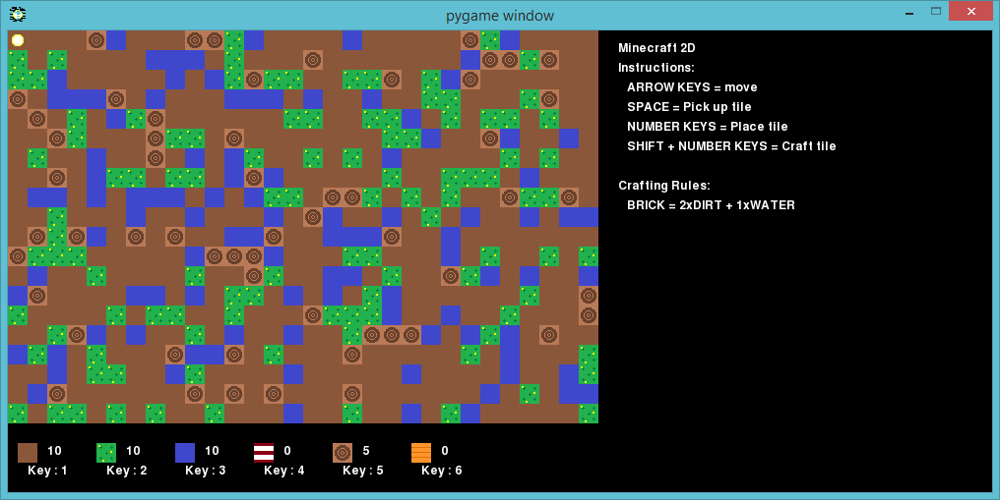

How to Create a Minecraft Adventure Map: A Step-by-Step Guide
By: James
Introduction
Minecraft, a virtual world filled with infinite possibilities, has been a favorite among gamers for over a decade. Millions of players around the world have spent countless hours exploring the game's various worlds, building stunning structures, and battling fearsome monsters. However, one of the most exciting aspects of Minecraft is creating custom maps that deliver new and exciting adventures for players to experience.
If you're looking to create your Minecraft adventure map, you've come to the right place. Our step-by-step guide will take you through the entire process, from brainstorming ideas to publishing your map for others to enjoy. No matter your level of experience with Minecraft or map making in general, our guide will provide you with all the tools you need to create a captivating experience for players.
In this guide, you'll learn how to create a storyline that will engage players, design and build custom structures, and populate your world with unique characters and challenges. We'll also cover the technical aspects of map making such as creating custom textures, utilizing command blocks, and testing your map for bugs.
Creating a Minecraft adventure map is both an art and a science, and with our guide, you'll be able to combine your creativity with technical know-how to make a truly unforgettable gaming experience. So, grab your pickaxe and let's get started on your next adventure!
ad space
Step 1: Plan Your Map
Creating your own Minecraft adventure map is an exhilarating and rewarding process, but it can also be daunting if you don't know where to start. If you're looking to embark on this epic journey, look no further! Our step-by-step guide will walk you through everything you need to know to create a Minecraft adventure map from scratch.
Step 1: Plan Your Map
Before diving into Minecraft and starting to build your adventure map, it's crucial to have a solid plan in place. A well-thought-out map will not only make your adventure more engaging and challenging, but also easier to navigate for players.
Start by brainstorming the theme and storyline of your map. Do you want to create a medieval castle adventure, a post-apocalyptic wasteland survival, or an underwater exploration mission? Whatever you choose, make sure to have a clear and captivating narrative that players can follow.
Next, consider the layout of your map. How big do you want it to be? Are there any specific biomes or areas you want to include? Sketching out a basic map design beforehand can help you envision the overall structure of your adventure.
Finally, determine the objectives of your adventure. What challenges will players need to overcome in order to progress through the map? Will they need to find hidden items, defeat bosses, or solve puzzles? The more dynamic and fun your challenges are, the more players will enjoy exploring your map.
With a solid plan in place, you're ready to start building your Minecraft adventure map! Stay tuned for step 2 of our guide, where we'll explore essential tools and materials for map-making.
ad space
Step 2: Build Your Map
So, you've decided to create your very own Minecraft Adventure Map! Great choice! Minecraft Adventure Maps are custom-built worlds that challenge players to explore, solve puzzles, and vanquish enemies. They offer a unique and exciting gameplay experience that keeps Minecraft players coming back for more. In this step-by-step guide, we'll take you through the process of creating your own Minecraft Adventure Map, and we'll start with step 2: Building Your Map.
Building a Minecraft Adventure Map requires creativity, patience, and attention to detail. You'll need to plan your map carefully, decide on your map's theme, and then create unique and exciting adventures for your players to embark on. So, grab your pickaxe, sharpen your imagination, and get ready to start building!
First, choose an interesting and unique theme for your map. This could be anything from a medieval castle to a haunted village or a sci-fi spaceship. Next, consider the size and scope of your map. You'll want to create a map that is both challenging and fun for your players to explore, but not so large that it becomes overwhelming.
Once you have your theme and size mapped out, it's time to start building! Use the Minecraft World Editor to create your map's landscape and terrain, and then begin adding in buildings, structures, and other details. Be sure to pay close attention to your details and create a map that is both visually appealing and challenging for your players.
As you build your map, consider adding in challenges and puzzles for your players to solve. These can be anything from parkour challenges to mazes, to secret passageways and hidden treasure chests. Be creative and make your map engaging and exciting.
Creating a Minecraft Adventure Map takes time and effort, but with the right tools and a bit of creativity, you can make a map that will provide hours of fun for Minecraft players around the world. So, start building and let the adventure begin!
ad space
Step 3: Test Your Map
Once you have created your Minecraft adventure map, the next step is to test it. Testing your map will help you identify any issues and ensure that it is enjoyable for others to play. In this step-by-step guide, we will cover the importance of testing and provide you with tips on how to effectively test your Minecraft adventure map.
Why Testing Your Map is Important:
Testing your map is crucial because it allows you to refine your map and ensure that it is playable for others. Not testing your map can lead to frustrating gameplay experiences for your audience or technical issues that prevent your map from functioning correctly.
Tips for Testing Your Map:
1. Test your map alone: Before sharing your map with others, play it alone to identify any issues or areas that need improvement.
2. Test your map with friends or family: Playing with friends or family can help you receive feedback and catch any issues you may have missed during solo testing.
3. Get feedback from the Minecraft community: Sharing your map on popular Minecraft forums or social media platforms can help you obtain feedback from a wider audience.
4. Test for glitches and bugs: While testing, keep an eye out for glitches and bugs. Take note of any issues you encounter and work to fix them before sharing your map with others.
5. Consider beta testing: If you want more feedback before releasing your map to the public, consider beta testing with a select group of players.
In conclusion, testing your Minecraft adventure map is an essential step in the creation process. By taking the time to refine and test your map, you can create an enjoyable and memorable gameplay experience for your audience.
ad space
Step 4: Release Your Map
Congratulations! You have made it to step four of creating a Minecraft adventure map: releasing it to the world. Whether you are looking to share your creation with friends or the wider Minecraft community, this step can be exhilarating and nerve-wracking all at the same time.
But fear not, as we have compiled some tips to help you navigate the process of releasing your map into the world. Firstly, it is essential to beta test your map thoroughly before publishing it. This will help you identify any issues or bugs that need fixing before players get their hands on your creation. Not only will this improve the player experience, but it will also prevent negative reviews or comments.
Next, consider which platform you want to release your map on. Do you want to make it available on websites such as Planet Minecraft or the Minecraft Marketplace? Or would you prefer to host it on your own website or server? Each option has its benefits and drawbacks, so it is worth considering which one will work best for you and your map.
When publishing your map, ensure that you include all necessary information, such as the map's name, a short description, and any installation instructions. It's also crucial to provide players with a way to provide feedback or report any issues they encounter while playing your map. This will not only help you improve your map but also build a loyal player base.
Finally, don't be discouraged if your map doesn't get the recognition or popularity you were hoping for. Instead, use the feedback you receive to improve and refine your maps for future releases. With persistence and dedication, your Minecraft adventure map could become the next big hit in the Minecraft community!
ad space
Conclusion
As any Minecraft enthusiast knows, adventure maps offer the opportunity to immerse yourself fully in the game’s limitless world. You can create a map that challenges and entertains players, offering them a unique experience unlike any other. And now, with our step-by-step guide, you too can design your own Minecraft adventure map that will keep your players engaged and excited for hours on end.
At this point, you’ve learned about the fundamentals of map design, picking the right game mode and mechanics, scripting events, creating custom NPCs, and exploring the various tools and assets that Minecraft has to offer. You’ve gotten a taste of the creative freedom that adventure maps provide and the satisfaction of seeing your ideas come to life.
But our guide doesn’t end here. Once you’ve completed your adventure map, it’s important to test it thoroughly, seeking out bugs and glitches and making adjustments where needed. You should also consider expanding your knowledge and skills, delving deeper into Minecraft’s modding scene or learning how to incorporate command blocks into your designs.
Above all, the secret to creating a successful adventure map is to stay true to your creative vision and to take feedback from players. As you’re designing, ask yourself what you would want to see in a map, what would make you excited to explore and engage with it. Remember that each map is unique, and there’s no limit to the creativity you can bring to your projects.
In the end, the satisfaction of seeing your players immersed in your world, engaged and entertained, is a reward in itself. We hope our guide has inspired you to embark on your own adventure map-making journey and we can’t wait to see what you create. Happy mapping!
ad space